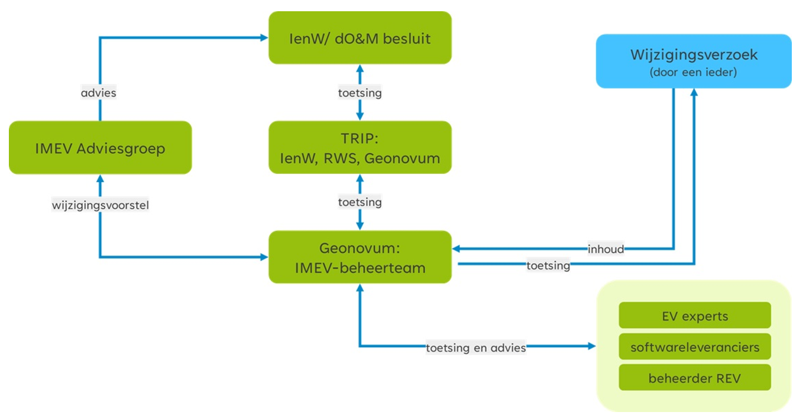

Belanghebbenden kunnen meldingen (wijzigingsverzoeken), variërend van wensen tot aanpassing van en fouten in het informatiemodel, indienen via de helpdesk bij Geonovum. Ontwikkelingen in de standaarden kunnen om verschillende redenen gewenst zijn, waaronder:
geconstateerde fout in de standaard;
wens tot wijziging, uitbreiding of vereenvoudiging uit de praktijk;
aanpassing van de standaard door internationale ontwikkelingen;
nieuwe wet- en regelgeving.
Wij geven inzicht in de ontvangen wijzigingsverzoeken en de status van de wijzigingsverzoeken via de issue-lijst op de Geonovum GitHub omgeving. In het geval Geonovum een wijzigingsproces start voor een nieuwe versie van het IMEV, bundelen we de verzoeken tot een wijzigingsvoorstel. Het wijzigingsprotocol beschrijft het wijzigingsproces en daarmee ook de procedure die het wijzigingsvoorstel doorloopt. Voor inzicht in de ontwikkeling, wijzigingsverzoeken en bijeenkomsten rondom het Informatiemodel Externe Veiligheidsrisico's zetten we de Geonovum website in. Het wijzigingsvoorstel vormt de basis om een nieuwe versie van een standaard op te stellen. Het beheerteam IMEV werkt daarvoor nauw samen met experts uit de praktijk. Met behulp van onder andere een publieke consultatie op de Geonovum website leggen wij het voorstel voor de nieuwe versie van een standaard voor aan de gebruikers van de standaard en vragen hun feedback. Het definitieve voorstel leggen wij voor aan de IMEV Adviesgroep. Bij het vaststellen van een nieuwe versie van het IMEV stelt het Ministerie van IenW, mede op basis van advies van de IMEV adviesgroep, vast hoelang een oude versie van het informatiemodel wordt ondersteund en wanneer een oude versie komt te vervallen.
Status van dit document
Dit is de definitieve versie van dit document. Wijzigingen naar aanleiding van consultaties zijn doorgevoerd.
Versiebeheer Dit document wordt bijgewerkt op ervaring en inzichten bij het wijzigen van het Informatiemodel Externe Veiligheid. In onderstaand overzicht houden wij de status van verschillende versies van dit document bij. Zo ziet u altijd wanneer de laatste versie is verschenen.
Versie
Datum
Status
Toelichting
1.0
8 februari 2023 2018
Definitief
Oplevering
1.1
november 2025
Werkversie
Actualisatie wijzigingsprotocol op basis van 1) het in 2025 vernieuwde [IMEV beheerplan](https://docs.geostandaarden.nl/imev/beheerplan/), 2) voorbereiding inhoudelijke actualisatie eerste 5 hoofdstukken IMEV, 3) aansluiting op de werkwijze in het (generieke) [wijzigingsprotocol van de geo-standaarden](https://geonovum.github.io/Geo-standaarden-wijzigingsprotocol/)
Naast actualisatie en tekstuele aanpassingen zijn de wijzigingen: Samenvatting toegevoegd; Hoofdstuk 2 – consultatie toegevoegd en procesvarianten aangesloten op ervaring en praktijk van de laatste 2 jaar, lijst van betrokkenen is voorzien van een visualisatie en aansluitende toelichting; Hoofdstuk 3 – fasen in het wijzigingsproces van hoofdstuk 2 naar 3 verplaatst; Hoofdstuk 5 – herschreven, Hoofdstuk 7 – status van wijzigingsverzoeken is vervallen.
1.1
12 maart 2026
Werkversie
Er is een extra scan op taalfouten uitgevoerd, dit heeft geen invloed op de inhoud van het document en daarom is de versienummering niet aangepast.
1. Inleiding
1.1 Introductie
Geonovum ontwikkelt en beheert het Informatiemodel Externe Veiligheid (IMEV) in opdracht van het minsiterie van Infrastructuur en Waterstaat. Mensen die in de praktijk gebruik maken van dit informatiemodel hebben vragen over de toepassing ervan, willen weten welke ontwikkelingen er spelen, en hebben mogelijk suggesties voor aanpassingen van het informatiemodel.
Het opstellen en gebruik van het protocol is onderdeel van het beheerproces van een standaard. Geonovum voert het beheer en de doorontwikkeling van standaarden, waaronder het Informatiemodel Externe Veiligheid, uit conform het beheer- en ontwikkelmodel voor open standaarden: BOMOS.
Wijzigingen in het Informatiemodel Externe Veiligheid worden niet zomaar doorgevoerd; voor de ene gebruiker van het model zal de wijzing gering zijn, voor de ander kan het grote gevolgen hebben. Daar houden wij rekening mee. De gebruikersgroepen van de standaarden en andere betrokkenen in het wijzigingsproces zijn vastgelegd, evenals de belangrijkste taken en verantwoordelijkheden en de momenten waarop zij betrokken zijn in dit proces.
1.2 Waarom een wijzigingsprotocol
In dit wijzigingsprotocol staan de sturende principes achter het wijzigingsproces voor deze standaard die Geonovum: de manier waarop wijzigingen in het Informatiemodel Externe Veiligheid plaatsvinden. Met het protocol wordt elke wijziging van het informatiemodel een voorspelbaar proces voor de ketenpartners en gebruikers van het informatiemodel. In het protocol zijn basisbegrippen en uitgangspunten uiteengezet voor het wijzigingsproces, bijvoorbeeld wat onder nieuwe en volgende versies verstaan wordt, en wanneer deze nieuwe versie(s) verwacht mogen worden. Tevens is een processchema uitgewerkt, dat invulling geeft aan de stappen die de gebruikers en ketenpartners met elkaar doorlopen om tot een wijziging van de geo-standaarden te komen.
1.3 Begrippen
Adviesgroep
Doel van de IMEV Adviesgroep is het sturen op verbinding en samenhang bij de doorontwikkeling van het informatiemodel. Dit doet zij door het controleren van het tot zover doorlopen wijzigingsproces, het wijzigingsvoorstel van advies te voorzien (het al dan niet doorvoeren van de wijzigingen en opleveren van een nieuwe versie van IMEV) en dit advies aan de opdrachtgever voor te leggen. De opdrachtgever besluit of de wijzigingen worden doorgevoerd op het IMEV.
De bronhouders worden via de koepels IPO, VNG en ODNL vertegenwoordigd in de IMEV Adviesgroep. Ook het ministerie van IenW als opdrachtgever, Rijkswaterstaat als beheerder van het REV en Geonovum als beheerder van het IMEV nemen deel aan deze adviesgroep.
Expert- en gebruikersgroepen
De expert- en gebruikersgroepen leveren input voor de impactanalyses van de wijzigingsverzoeken aan het IMEV-beheerteam van Geonovum.
IMEV en beheerobjecten
Het Informatiemodel Externe Veiligheid bevat afspraken over de digitale structuur waarin overheden gegevens vastleggen over de opslag, het transport en het gebruik van gevaarlijke stoffen. Het IMEV bestaat uit:
Modeldocument
JSON-schema
Voorbeeld API-specificatie
Voorbeeldbestanden
Het EAP-bestand met UML diagrammen
Wijzigingsprotocol
Hiermee wordt het geheel van vastgelegde regels en afspraken voor het wijzigen van de standaard en de bijkomende beheerobjecten vastgelegd.
Wijzigingsproces
Het wijzigingsproces is de daadwerkelijke wijziging van het IMEV en/of een van de overige beheerobjecten, op een bepaald moment. Het volledige wijzigingsproces doorloopt de fasen van het wijzigingsprotocol met een datum van inwerkingtreding van de nieuwe versie van het IMEV en haar onderdelen.
Wijzigingsverzoek
Wijzigingsverzoeken zijn wensen of eisen voor aanpassing van de standaard. Een wijzigingsverzoek wordt door een gebruiker van de standaard ingediend bij de IMEV-helpdesk van bij Geonovum. Volgens de gebruiker moet het Informatiemodel op een bepaald onderdeel met reden worden aangepast of aangevuld voor een betere werking van de standaard. Het wijzigingsverzoek wordt door het IMEV-beheerteam beoordeeld, ingeschat en aan de wensen- en eisenlijst toegevoegd die voor iedereen toegankelijk is via de publieke IMEV werkomgeving op [GitHub](https://github.com/Geonovum/imev-werkomgeving/issues). Een wijzigingsverzoek dat niet wordt ingewilligd, wordt beargumenteerd afgewezen.
Wijzigingsvoorstel
In het wijzigingsproces worden meerdere wijzigingsverzoeken gebundeld tot één wijzigingsvoorstel voor het wijzigen van de standaard en de bijkomende beheerobjecten.
2. Gebruik van het wijzigingsprotocol
Het protocol schrijft een vast stramien voor het wijzigen van de standaard voor. Het protocol benoemt de fasen en de op te leveren resultaten. Belangrijk zijn de randvoorwaarden en uitgangspunten. De gebruikers van het informatiemodel Externe Veiligheid betrekken wij bij het wijzigen van het model. We zetten op en rij welke betrokkenen er zijn.
2.1 Protocol versus proces
De titel van dit document geeft aan dat het hier om een protocol gaat. Toch wordt in dit document ook gesproken over processen. Een wijzigingsprotocol beschrijft de manier waarop wijzigingen in het Informatiemodel Externe Veiligheid plaatsvinden: het wijzigingsproces. In het protocol zijn basisbegrippen en uitgangspunten uiteengezet voor het wijzigingsproces, bijvoorbeeld wat onder nieuwe en volgende versies verstaan wordt en wanneer deze verwacht mogen worden. De daadwerkelijke planning van een nieuwe versie wordt in overleg met de opdrachtgever en eigenaar van de standaard, het ministerie van Infrastructuur en Waterstaat, en de beheerder van de Register Externe Veiligheid (REV) periodiek afgestemd.
Met behulp van dit wijzigingsprotocol voor het Informatiemodel Externe Veiligheid geeft Geonovum:
inzicht in het behandel- en besluitproces dat ten grondslag ligt aan het versiebeheer;
inzicht in de wijzigingsverzoeken;
inzicht in een voorgestelde wijziging van de standaard;
stabiliteit aan de standaard;
continuïteit aan de standaard;
een eenduidige aanpak.
2.2 Releasebeleid
2.2.1 Nieuwe versie van de standaard
Een release van een standaard is een nieuwe uitgave van de standaard. De nieuwe release kenmerkt zich ten opzichte van de oude versie door een hoger versienummer. Een release betreft 1 product van een standaard of is een bundel van meerdere producten van de betreffende standaard. Bij de release is ieder product is voorzien een nieuw versienummer conform X.Y.Z schrijfwijze (zie hierna) en een status. Het JSON-schema en de voorbeeldbestanden hebben zo ieder hun eigen versienummer.
Bij een standaard in beheer horen ook afspraken over het versiebeheer. Versies van een standaard zijn er in verschillende gradaties die elk een relatie hebben met een voorgaande versie. De wijzigingen documenteren wij en leggen wij vast in een apart document bij de uitgebrachte versie van de standaard. De gebruiker kan zo nagaan op welke plaatsen de betreffende standaard gewijzigd is.
Elk product van onze standaarden voorzien wij van een versienummer. Dit doen wij conform Semantic Versioning (SemVer). Elk product heeft zijn eigen versienummer conform X.Y.Z schrijfwijze, bijvoorbeeld versie 2.1.0 (=X.Y.Z):
X-wijzigingen Dit zijn grote wijzigingen die de structuur van de standaard veranderen. Hierdoor zijn X-wijzigingen niet backwards compatible. Frequentie: in overleg met de opdrachtgever.
Y-wijzigingen Dit zijn wijzigingen die niet de structuur veranderen. Dit kunnen bijvoorbeeld updates zijn of inhoudelijke aanpassingen aan objecten, attributen of waardelijsten of de reikwijdte van de standaard. Deze wijzigingen zijn backwards compatible. Frequentie: in overleg met de opdrachtgever.
Z-wijzigingen Dit zijn in feite oplossingen van technische fouten of verbeteringen van technische aard. Deze wijzigingen zijn backwards compatible. Frequentie: zo spoedig mogelijk na constatering.
2.2.2 Consultatie
Met het doorontwikkelen van het informatiemodel leveren wij nieuwe versies van de producten van de IMEV op. Doel van een consultatie is ons netwerk, de gebruikers van de standaard en de ketenpartners, te raadplegen; wij vragen hen om advies, zodat het IMEV zo goed mogelijk aansluit op de werkprocessen van de eindgebruikers van de standaarden.
De consultaties zijn openbaar/ publiek en daardoor mag iedereen reageren op de nieuwe versie. Consultaties duren minimaal 3 weken en maximaal 8 weken. Bekendmaking gebeurt via de Geonovum website en wordt bekendgemaakt door middel van een nieuwsbericht op de website van Geonovum en via de website van het Register Externe Veiligheid. We attenderen de gebruikers en de ketenpartners via de REV- nieuwsbrief. Wanneer en hoe lang een consultatie plaatst vindt, is afhankelijk van proces varianten bij wijzigingen (zie paragraaf procesvarianten).
2.2.3 Oudere versie van een standaard
Na het uitbrengen van een nieuwe versie van een bij Geonovum in beheer zijnde standaard blijven oudere versies beschikbaar en zijn vindbaar via de Geonovum website en de registers (de conceptenbibliotheek, het technisch register en het documentenregister). Een nieuwe versie dwingt daarmee geen directe overstap af bij de gebruikers, tenzij anders (bijvoorbeeld wettelijk, bij ministeriële regeling) bepaald. Na het uitbrengen van de nieuwe versie van een standaard wordt de ontwikkeling van de oude versie stopgezet.
De SemVer-methodiek schrijft backwards compatibility voor op het Y-niveau.
Voor het onderhoud en de ondersteuning van een oude versie van een standaard gelden de volgende uitgangspunten:
Aan een oude versie worden geen nieuwe features toegevoegd, geen aanpassingen gedaan op X en Y niveau na het uitbrengen van een nieuwe versie. Verzoeken om aanpassing en wijziging voor nieuwe functionaliteit worden niet meer voor de oude standaard in behandeling genomen maar doorgegeven aan het ontwikkelteam. Correcties (Z-wijzigingen) worden wel uitgevoerd op de vorige versies zolang deze nog ondersteund worden.
Bij oplevering van een nieuwe versie wordt de voorgaande versie nog een van te voren vastgestelde periode ondersteund. De duur van de overgangsperiode wordt mede bepaald door de omvang van de wijzigingen (X, Y en Z wijzigingen op de vorige versies), de staat van ontwikkeling van de standaard, en of de standaard in voorlopig dan wel permanent beheer is.
De duur van de ondersteuningsperiode voor de diverse soorten versies moet nog worden vastgesteld. In de eerste jaren na de inwerkingtreden van de Omgevingswet, waar de Informatiemodel Externe Veiligheidsrisico's ook onder valt, zal de ondersteuningsperiode van verschillende versies anders zijn, dan in de periode van permanent beheer zonder dat daarnaast nog grootschalige ontwikkeling van de standaard plaatsvindt.
2.3 Proces varianten
In paragraaf 2.2 zijn de X, Y en Z wijzigingen uitgelegd. Voor wijzigingen kent Geonovum twee proces varianten. Eén voor X en Y wijzigingen en één voor Z wijzigingen.
Proces voor X en Y wijzigingen
X en Y wijzigingen vergen volledige afstemming en het doorlopen van alle in paragraaf 3.1 beschreven fasen: Inhoud, Toetsing, Besluitvorming en Implementatie. Voor de inhoudelijke fase worden niet alleen de experts en leveranciers betrokken vanuit reguliere overleggen maar ook extra bijeenkomsten met vertegenwoordiging van belangrijke stakeholders en gebruikers. Het resultaat van de besprekingen is het aanscherpen van de wijzigingsverzoeken en het wijzigingsvoorstel. Gedurende de fase ‘Toetsing’ vindt een consultatie (zie paragraaf 2.2.2) van het wijzigingsvoorstel plaats waardoor alle gebruikers van het IMEV en geïnteresseerden in staat worden gesteld te reageren op de komende wijziging. Het wijzigingsvoorstel inclusief de consultatiereacties wordt voorgelegd aan de IMEV Adviesgroep. De Adviesgroep adviseert het Ministerie van IenW (zie figuur 1). Besluitvorming over vaststelling van een nieuwe versie van het model vindt plaats door IenW.
Proces voor Z wijzigingen
Dit betreft kleine wijzigingen die door Geonovum worden uitgevoerd en opgeleverd; dit wordt een bugfix genoemd. De inhoudelijke fase wordt door het beheerteam IMEV van Geonovum gedaan. Toetsing vindt plaats door middel van werksessies met experts en softwareleveranciers. Besluitvorming vindt plaats in afstemming met het Ministerie van IenW. Geonovum publiceert de nieuwe versie op de Geonovum website en informeert direct het Ministerie van IenW, de Adviesgroep en de softwareleveranciers. Bekendmaking gebeurt via de Geonovum website en wordt bekendgemaakt door middel van een nieuwsbericht op de website van Geonovum en via de website van het Register Externe Veiligheid. We attenderen de gebruikers en de ketenpartners via de REV- nieuwsbrief.
2.4 Betrokkenen
De volgende groepen en instanties (actoren) zijn betrokken bij het wijzigingsproces van het Informatiemodel:
IMEV-Aviesgroep
Expert- en gebruikersgroepen
Softwareleveranciers
Geonovum
Rijkswaterstaat
Ministerie van Infrastructuur en Waterstaat

Figuur 1Betrokkenen bij wijzigingen van het Informatiemodel Externe Veiligheid
Het IMEV-beheerteam bij Geonovum ontvangt wijzigingsverzoeken ter verbetering van het informatiemodel, gebruik en de bruikbaarheid van het informatiemodel. De wijzigingsverzoeken worden getoetst en van baten en impactanalyses voorzien, door de verzoeken te toetsen bij experts, softwareleveranciers en de beheerder van het REV.
De expert- en gebruikersgroepen rondom het REV en het IMEV leveren input op de wijzigingsverzoeken en daarmee doorontwikkeling van het IMEV. Ook toetsen wij de wijzigingsverzoeken bij de softwareleveranciers en Rijkswaterstaat als beheerder van het REV en vragen wij hen ons te adviseren.
De wijzigingsverzoeken worden door het IMEV-beheerteam gebundeld tot een zelfstandig leesbaar wijzigingsvoorstel dat in verschillende iteraties bij het IMEV Adviesgroep wordt voorgelegd. De IMEV Adviesgroep stuurt op verbinding en samenhang bij de doorontwikkeling van het informatiemodel. Zij brengt advies uit op de door Geonovum voorgestelde wijzigingsvoorstel en legt dit advies voor aan het Ministerie van Infrastructuur en Waterstaat ter besluitvorming. De Directie Omgevingsveiligheid & Milieurisico’s van het ministerie besluit over de voorgestelde wijziging. Bij een positief besluit werkt Geonovum aan de oplevering van de nieuwe versie van het IMEV en gaat over op implementatieondersteuning.
3. Wijzigingsproces
De aanleiding voor een wijzigingsproces is gebaseerd op wijzigingsverzoeken die bij Geonovum binnenkomen via de IMEV helpdesk: de wensen en gevonden fouten in het informatiemodel externe Veiligheid, die aanleiding zijn om de standaard te vernieuwen. Samen vormen zij het wijzigingsvoorstel. Geonovum neemt als beheerder het initiatief om een wijzigingsproces te starten conform dit wijzigingsprotocol.
3.1 Fasen in het wijzigingsproces
Het volledige wijzigingsproces doorloopt de fasen Inhoud, Toetsing, Besluitvorming en Implementatie, zoals weergegeven in Figuur 2.
Inhoud In de fase Inhoud wordt voor iedere wijzigingsverzoek bepaald of deze wordt opgenomen in de nieuwe versie van de standaard of niet.
Dit wordt door Geonovum vastgelegd in de issue-lijst op de Geonovum GitHub.
Voor wijzigingsverzoeken die worden meegenomen in de nieuwe versie van de standaard, worden baten en impact beschreven en oplossingen uitgewerkt.
Dit gebeurt in samenwerking met expert- en gebruikersgroepen, softwareleveranciers en de beheerder van het REV.
Afhankelijk van de omvang van de wijziging ten opzichte van de voorgaande versie is de groep van te raadplegen experts evenredig groter of kleiner.
Toetsing De fase Toetsing vormt een brug tussen de inhoud, besluitvorming en de implementatie.
In deze fase wordt eenieder (in het geval van een X of Y wijziging) of een beperkte groep belanghebbenden (in het geval van een Z wijziging) uitgenodigd om zijn of haar visie te geven op het wijzigingsvoorstel voor de nieuwe versie van het IMEV.
Met deze consultaties vragen wij de gebruikers van de standaard actief hun reactie te geven op het wijzigingsvoorstel.
Het wijzigingsvoorstel inclusief de terugkoppeling uit de consultatie wordt verwerkt als release candidate van het informatiemodel externe veiligheid.
Besluitvorming Het wijzigingsvoorstel wordt inclusief de consulatie reacties voorgelegd aan de IMEV Adviesgroep.
Zij voorziet het wijzigingsvoorstel van advies.
Het Ministerie van Infrastructuur en Waterstaat besluit, afhankelijk van het type wijziging (X, Y of Z, zie paragraaf 2.3), over de voorgestelde wijziging.
Implementatie Het in gebruik nemen van het Informatiemodel in de praktijk staat centraal in deze fase. Hiervoor levert Geonovum op:
Modeldocument
JSON-schema
Voorbeeld API-specificatie
Voorbeeldbestanden
Het EAP-bestand met UML-diagrammen
Met deze producten, de beschikbare helpdesk en door middel van online en fysieke bijeenkomsten ondersteunen bij de implementatie van de nieuwe versie van het informatiemodel. Resultaat van deze fase is dat de gebruikers data kunnen maken en uitwisselen conform de nieuwe standaard.
In Hoofdstuk 5 lichten we de implementatiefase verder toe.
3.2 Inzicht in het wijzigingsproces
De meldingen en wijzigingsverzoeken alsook (inter)nationale ontwikkelingen geven aanleiding tot de verdere ontwikkeling voor een standaard. Zij worden gebundeld in een wijzigingsvoorstel. Het wijzigingsprotocol geeft richting aan het wijzigingsproces dat dit wijzigingsvoorstel doorloopt. Het ministerie van IenW, besluit na advies van de adviesgroep over het wijzigingsvoorstel. Z-wijzigingen worden door Geonovum zelf besloten en uitgevoerd.
4. Tussentijdse werkafspraken
Het toepassen van het Informatiemodel Externe Veiligheid roept soms vragen op. Bij onduidelijkheden, discrepanties of fouten in de standaard kan de praktijk vragen hoe zij de standaard – in afwachting van een formele wijziging– moet toepassen. Met name bij X-wijziging van de standaard, die een grote impact op toepassing in de praktijk heeft, zullen geconstateerde eisen of gewenste wijzigingen in de regel niet heel snel worden doorgevoerd op het IMEV. Een tussentijds gebruiksadvies totdat de X-wijziging gepubliceerd en geïmplementeerd kan worden, noemen we een werkafspraak. In dit hoofdstuk lichten we de werkwijze van werkafspraken toe.
Als er een fout of probleem wordt geconstateerd, zal er doorgaans geruime tijd overheen gaan voordat dit wordt hersteld in de formele standaard. Typische voorbeelden van dit soort fouten zijn in algemene zin:
De ene standaard hanteert voor een bepaalde aanduiding een andere spelling dan een andere standaard, waardoor je plan formeel nooit aan alle standaarden kan voldoen;
In de standaarden zijn bepaalde technische vrijheden mogelijk die op grond van een goede praktijk niet zouden moeten worden benut;
In de standaarden is iets wel mogelijk, maar niet verplicht, terwijl dit wel sterk gewenst is.
In dit soort gevallen zal Geonovum na consultatie van softwareleveranciers, gebruikersgroep en IMEV Adviesgroep een werkafspraak publiceren over hoe er in afwachting van formele reparatie moet worden omgegaan met een geconstateerd probleem. Zo’n werkafspraak heeft de formele status van een advies van Geonovum aan de gebruikers van het IMEV. De werkafspraak vervangt niet de in gebruik zijnde versie van IMEV, maar geldt wel als werkwijze in afwachting van reparatie van een onderdeel van het reguliere beheer en de komende X-wijziging.
Voor bovengenoemde voorbeelden zouden de werkafspraken er resp. als volgt uit kunnen zien:
Hanteer altijd de spelling volgens standaard A;
Gebruik nooit de mogelijkheid B die de standaarden bieden;
Doe het altijd op manier C.
De status van deze werkafspraken is als volgt:
de werkafspraken zijn van toepassing totdat de wijzigingen in werking zijn getreden, daarna zijn ze niet meer van toepassing en vervallen zij;
indien mogelijk zijn de werkafspraken altijd een directe voorloper van de wijzigingen zelf die zullen worden doorgevoerd. Vaak zal een werkafspraak een keuze bevatten. Deze zal goed beredeneerd zijn, maar toch anders kunnen uitvallen als het daadwerkelijke wijzigingsproces wordt ingezet;
er worden alleen werkafspraken gemaakt die vooruitlopen op aanstaande wijzigingen. Er worden binnen dit kader geen permanente werkafspraken gemaakt die niet verankerd zullen worden in de IMEV standaard;
het toepassen van de werkafspraken is (van rechtswege) niet verplicht, maar geeft voor duidelijkheid en richting bij implementatie door softwareleveranciers en bronhouders;
het toepassen van de werkafspraken vergemakkelijkt de implementatie van wijzigingen, omdat het een al een voorbereidende werkwijze is voor een ander situatie;
waar van toepassing zullen de werkafspraken niet leiden tot afkeuring van data die hier niet aan voldoen door de validator van het REV. Eventueel kan wel een waarschuwing of andersoortige melding worden gegeven over de geconstateerde afwijking van de werkafspraak.
5. Implementatie ondersteuning
Het in gebruik nemen van (een volgende versie van ) een standaard staat centraal in deze fase. Hiervoor kunnen we de verschillende implementatiebestanden opleveren. Wij ondersteunen de implementatie met onder meer een helpdesk.
5.1 Technische bestanden
Om de beheerders van het Register Externe Veiligheidsrisico's, de softwareleveranciers en andere gebruikers van de standaard te ondersteunen bij de implementatie van een nieuwe versie van de standaard, leveren wij verschillende bestanden en documentatie op:
Modeldocument;
JSON-schema;
Voorbeeld API-specificatie;
Voorbeeldbestanden;
Het EAP-bestand met UML-diagrammen.
De bestanden zijn beschikbaar en vindbaar via de IMEV pagina op de Geonovum website.
5.2 Validatie en certificatie
Na het opleveren van de nieuwe standaard inclusief de verschillende producten, richten wij ons op de implementatie ondersteuning van de standaard door softwareleveranciers, beheerder van het REV en de bronhouders: dit is implementatieondersteuning vanuit optiek van het gebruik van de standaard in de praktijk.
Bij softwareleveranciers en het register is de ondersteuning vooral technisch van aard.
De validator is het hulpmiddel bij uitstek hierbij.
De validatieregels zijn bij de meeste van onze standaarden een van de producten.
De validator is een tooling instrument die doorgaans bij een voorziening/ register van dezelfde keten wordt beheerd.
Bij het REV wordt nog beperkt ingezet op validatiemogelijkheden op basis van het IMEV.
De regels opgenomen in IMEV (UML - constraints) zijn nog niet als apart product beschikbaar.
Wanneer de validator van het REV beschikbaar is en wordt doorontwikkeld, stemmen we de ontwikkeling van IMEV validatieregels als apart product en de implementatie daarvan af met Rijkswaterstaat en de softwareleveranciers.
Soms zet Geonovum conformiteitstoetsing in.
In dat geval wordt een testprotocol voor een conformiteitstoets beschikbaar gesteld, waarmee (handmatig) kan worden gecontroleerd of een implementatie aan de norm voldoet.
In hoofdstuk 6 van NEN3610:2022 is ook informatie rondom conformiteit opgenomen.
Voor versie 3.0 van het IMEV is deze conformiteitstoets uitgevoerd en is het IMEV op onderdelen aangepast.
Ook certificering van applicaties is mogelijk.
Certificering van applicaties ondersteunt niet zozeer de (kwaliteit en de) implementatie van de standaarden, als wel de (snelheid van) adoptie ervan.
Zodra het werkveld voldoende volwassen is en certificering niet meer nodig is om adoptie te versnellen, kan certificering komen te vervallen.
Voor het IMEV en het EV domein is op dit moment geen sprake van certificering.
5.3 Opleiding
Opleiding en advies kunnen van toegevoegde waarde zijn bij de ondersteuning van de gebruikers bij de nieuwe versie van het informatiemodel. Middelen als documentatie, (online) bijeenkomsten, workshops en pilots en kunnen in samenwerking met het Rijkswaterstaat als beheerder van het REV worden ingezet om de kennis over de wijzigingen in de versie van het IMEV te delen en te ondersteunen bij het in gebruik nemen van de nieuwe versie. Meer over opleiding van gebruikers in het IMEV beheerplan.
5.4 Communicatie
Het hele wijzigingsproces staat of valt met een goede communicatie. Onder goede communicatie wordt verstaan het tijdig leveren van de juiste informatie aan de juiste belanghebbenden. Dit betreft de proceskant alsook de producten die er worden opgeleverd.
Website Voor eenieder is via de IMEV pagina op de Geonovum website is meest actuele informatie rondom het Informatiemodel Externe Veiligheid te raadplegen waaronder het informatiemodel.
Via de nieuwsberichten op de Geonovum website informeren we het werkveld over nieuwe versies van het informatiemodel.
Deze nieuwsberichten worden ook geplaatste op de REV website.
Met de agenda op de Geonovum website en de agenda op de REV website informeren wij experts en softwareleveranciers over bijeenkomsten.
De publieke werk- en ontwikkelomgeving van de standaarden en de producten van de standaarden is de Geonovum GitHub omgeving.
Geonovum gebruikt voor de standaarden en de producten van de standaarden die wij ontwikkelen en beheren zogenoemde publicatieservers.
Deze publicatieservers gelden als bronlocatie voor de producten zoals het informatiemodel en de technische implementatiebestanden van onze standaarden en zijn daarop vindbaar.
Consultatie Bij X-wijzigingen zal Geonovum de aanpassingen in het model in een publieke consultatie aan eenieder voorleggen, zie ook paragraaf 2.2.2.
Werkafspraken De werkafspraken die bepalen hoe er in de tussentijd moet worden omgegaan met geconstateerde fouten en problemen (zie Hoofdstuk 4).
De werkafspraken publiceren wij via de Geonovum website.
Door middel van nieuwsberichten op de website en het versturen van de nieuwsbrief in samenwerking met RWS (beheerder van het Register Externe Veiligheidsrisico's) en het ministerie van Infrastructuur en Waterstaat informeren wij het werkveld over de nieuwe dan wel aangepaste werkafspraak.
Nieuwe producten inclusief releasenotes Wijzigingen in het model worden bekendgemaakt op de Geonovum website en in de nieuwsbrief van het REV.
Ook zijn ze raadplegen als releasenotes in het informatiemodel.
6. Escalatie- en klachtenprocedure
We doorlopen een escalatieprocedure als er een wijziging noodzakelijk is die niet in het reguliere wijzigingsproces van IMEV doorgevoerd kan worden, omdat dit te lang duurt. Een uitputtende lijst met situaties en criteria wanneer dit van toepassing is, valt op voorhand niet te geven. Maar voor de beeldvorming: het gaat om situaties waarbij het niet doorvoeren van een bepaalde noodzakelijke wijziging leidt tot onaanvaardbare risico's voor de uitvoeringspraktijk of het onmogelijk uitvoeren (vanwege bijvoorbeeld tegenstrijdige wetten) van werkzaamheden. De escalatieprocedure wordt niet gebruikt om reguliere wijzigingen sneller door te kunnen voeren; daarvoor zijn de voorgaande hoofdstukken van dit IMEV wijzigingsprotocol leidend.
In het geval een escalatie- en/of klachtenprocedure zich heeft voorgedaan, vindt rapportage hierover plaats via de kwartaalrapportage van Geonovum aan de opdrachtgever het Ministerie van Infrastructuur en Waterstaat.
6.1 Sturende principes bij escalatie
Er wordt geen vast proces gegeven om de escalatieprocedure te doorlopen, omdat verschillende situaties wellicht tot een verschillende wijze van handelen moeten leiden. In plaats daarvan zijn onderstaande sturende principes leidend om verantwoordelijkheden te duiden.
Signalering Uit het werkveld kunnen signalen ontstaan dat er met spoed iets gewijzigd zou moeten worden. Het is vooraf niet aan te geven uit welke kanalen deze geluiden zullen ontstaan. Het is wel van belang om de rol van Geonovum te onderkennen als antennefunctie voor het werkveld. In ieder geval zullen deze signalen op enig moment de opdrachtgever of Geonovum bereiken, en op dat moment zal er overleg gevoerd worden over deze signalen.
Overleg Bij de besluitvorming binnen de escalatieprocedure wordt er in principe overleg gevoerd tussen Geonovum en de opdrachtgever het ministerie van IenW. Beide partijen raadplegen de betrokkenen daar waar nodig.
Besluitvorming De beoordeling, of de escalatieprocedure van toepassing is, wordt genomen door de voorzitter van het gremium bij het ministerie van IenW dat de beheeropdracht monitort, dan wel de contactpersoon bij de opdrachtgever van IenW. Ook het besluit welke wijzigingen er precies doorgevoerd moeten worden en op welke manier, wordt genomen door dezelfde persoon.
Coördinatie De coördinatie tijdens de escalatieprocedure wordt uitgevoerd door de voorzitter van het gremium dat de beheeropdracht monitort, dan wel de contactpersoon bij de opdrachtgever.
Communicatie met het werkveld De communicatie met het werkveld wordt uitgevoerd door Geonovum. Als beheerder van het IMEV wordt verwacht dat Geonovum de meest directe contacten heeft met het werkveld.
6.2 Klachtenafhandeling
Het garanderen van het serieus nemen van klachten kan alleen, door deze volgens een zorgvuldige procedure te behandelen. Klachten kunnen ook beschouwd worden als verbetersuggestie. We onderscheiden daarom twee verschillende type klachten met betrekking tot de standaarden:
Klachten over de toepassingsmogelijkheid van de standaard;
Klachten over het beheer van de standaard.
In het eerste geval is het feitelijk geen klacht maar een wens of eis tot het aanpassen van de standaard. De beheerders van de betreffende standaard nemen dit in behandeling en vastgelegd als wijzigingsverzoek en niet als klacht. In dit geval doet Geonovum haar werk goed.
In het tweede geval is er sprake van ontevredenheid over de uitvoering van het beheerproces van de standaard en betreft het niet de inhoud, de standaard zelf. De indiener is van mening dat Geonovum, het beheerteam van de betreffende standaard, dan wel een persoon het werk niet naar behoren uitvoert. In dat geval wordt de klacht doorgezet naar opdrachtgever van het beheer van de standaard.
De route van indienen van klachten is bij Geonovum in principe via de IMEV helpdesk. Dit is de manier om met Geonovum in contact te komen, vragen te stellen en wensen en eisen met betrekking tot de standaard kenbaar te maken. Door het via een helpdesk te laten verlopen, wordt ook het type van de issues geregistreerd. De helpdesk route voor zowel vragen, wijzigingsverzoeken, klachten en incidenten geeft een zo compleet mogelijk overzicht in het contact met de gebruikers van de standaarden, over de standaarden.